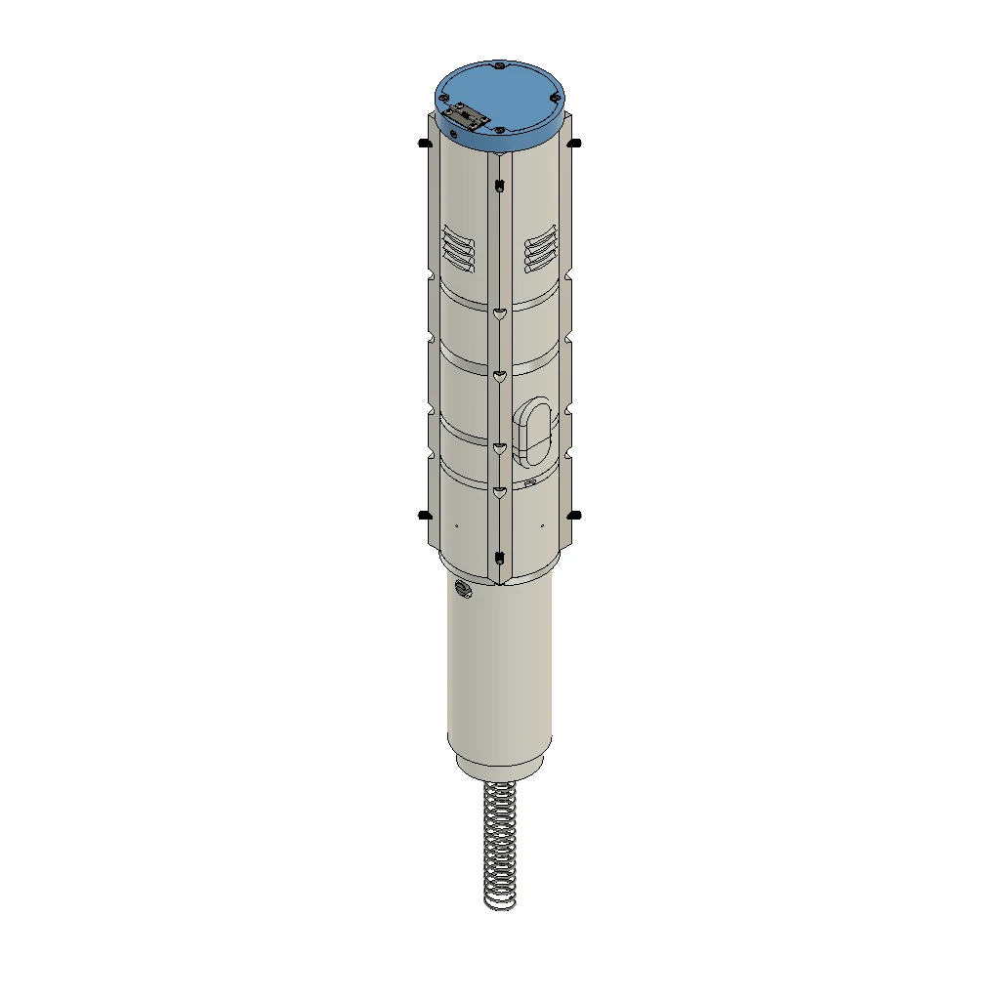

PROJECT 04 / Payload mechanics · Sensor integration
Building the current sensor suite.
I lead mechanical design and integration of the current sensor suite, including sensor deployment hardware and battery/GPS mounts.

01 / THE PROBLEM
Design requirements.
I’m developing hardware to house temperature, pressure, and vibration sensors in our current IREC payload, with openings that allow external readings during flight.
02 / MY ROLE
My contribution.
I designed mounting brackets and sliding mechanisms to secure the sensor boards and allow sensors to extend through payload openings. I also designed and integrated a battery/GPS hub with component mounts, storage, and wire passages.
03 / DESIGN PROCESS
My design process.
- 01
Package the sensor suite
I develop the mounts and sliding mechanisms around the sensor boards and payload openings.
- 02
Organize power and tracking
I integrate the battery and GPS hub, including secure mounting and space for electrical connections.
- 03
Coordinate the assembly
I work on the mechanical interfaces within the team’s round payload assembly as the sensor suite develops.
Tools & materials
- Fusion 360
- CAD assemblies
- Sensor mounting brackets
- Sliding mechanisms
- Battery/GPS integration
Design challenges
I’m balancing component retention, wiring space, and sensor access within the round payload.
04 / RESULTS & STATUS
Results & status.
The sensor-suite mounts, sliding mechanisms, and battery/GPS hub are represented in CAD. Design and integration are ongoing.
05 / PROJECT GALLERY
A closer look.
Explore the project views below. Select an image to enlarge it.
About these views
The gallery contains static views. Select an image to see it at a larger size.
Project scope
I’m responsible for payload mechanics, including sensor-suite hardware and battery/GPS mounts. The full payload is a team project and is separate from my earlier NASA USLI electronics work.
Project downloads
Project downloads are not currently available.